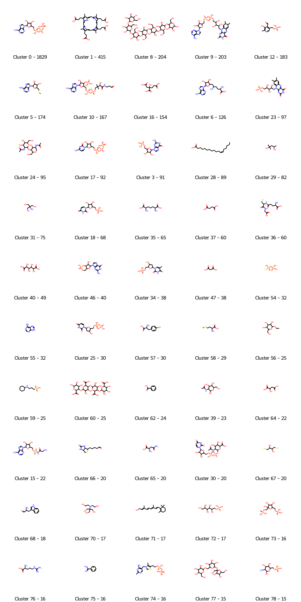

Binding site comparison - current benchmark issues
A (long) comment on current pitfalls on binding site comparison papers & their benchmarking
binding site
pocket
cavity
pocket comparison
structure-based drug design
Published
November 7, 2022
Intro
First of all, what is written here is my personal viewpoint on the matter. It is conceivable that other people might have different opinions on this topic ;)
There has been a lot of interest on the comparison (in 3D) of binding sites since initiating work in that scope by Jambon et al. Today several methods exist, some of them freely available and some of them … not. I also got sucked into the field by the end of my PhD but never ended writing up papers about the whole topic. There are several reasons for that. The main one is likely laziness and total frustration with the scientific publishing & reviewing process. So now I decided to write things up gradually here and maybe one day I’ll spend some time shaping that into a paper ;) This post is mainly about the shortcomings in the way these algorithms are generally validated & intends to challenge currently accepted benchmark datasets in the field. NB: my focus here is to validate at some point my own algorithms, but given the state of the art, a bit of work on the datasets themselves is in order! Also, I’m focusing on how can such binding site methods be applied in the context of drug-discovery when sieving through all structural information available within resources like the RCSB PDB or a model database, like Alphafold or derivatives.
What is binding site comparison?
In its simplest form, the fact to be able to compare two pockets from two structures and assess to what extent they are similar. I guess you can already see the various pitfalls in this definition. Binding site comparison could have some rather nice applications when applied on a larger scale (compare one or multiple binding sites to millions of others) in order to identify potential off-targets (or promiscuity prediction) or chemical matter that might bind in such an environment (drug repurposing or bioisosteric replacements, fragment based designs etc …). Comparing binding sites is not a trivial task and the perception on how this should be done can vary significantly depending on the use-case or mind-set at hand. Here are some potential use cases that require dedicated datasets & validation: - idea generation in drug discovery (hit id & lead opt) - polypharmacology prediction (toxicology) - protein function prediction
Existing literature
Today there are a lot of papers published on that topic. As usual with method development papers in science, with them a ton of ways proving that the authors’ method is for sure always the best one compared to a small selected set of the other existing ones … The field of binding site comparison lacked for a very long time a throuroughly built & commonly accepted benchmark dataset and this for various reasons. But in the end, we end up with the typical mess with a ton of methods each better than the other but not really comparable nor compared to one another.
Prospeccts
A recent (well now not so recent anymore …) review article by Christiane Ehrt, Tobias Brinkhorst & Oliver Koch tries to address some of the historical shortcomings in the field. They summarize some approaches known today (not extensive, but representative). You can find them in table 1 of the paper by Ehrt, Brinkjost, and Koch (2018). I fully understand that benchmarking a posteriori tens of different methods & developers must be daunting task & am really grateful the team tackled such an effort.
The paper reuses / discusses some of the older datasets in the litterature, and I’ll cover mainly two of the ones used by the authors.
Ehrt et al also touch upon a different topic in that paper: a dataset to benchmark a method depends on the scope of capabilities you want to test your method on. That’s a reality that was simply absent from validations before. If you want to prove that your method is capable of detecting remote relationships between binding sites on very different proteins known to bind similar ligands (or not), you have to actually validate that on a relevant dataset.
TOUGH dataset
Original paper from Govindaraj and Brylinski (2018). This dataset was introduced by Govindaraj & Brylinski the same year as the publication of prospeccts. It is an interesting one, because it focuses on one of the “dreams” in the binding site comparison community: “Two very different binding sites known to bind a similar ligand, must be to some extent similar”. I’ll come to that statement a bit later. Basically their viewpoint is that some of the previous studies had performances published that were too good, because the underlying protein structures used in the binding site comparison evaluation were too similar.
So they set up a process to generate a more challenging (“tough”) dataset for such methods as described in figure 1 of that paper from Govindaraj and Brylinski (2018)
I’m currently still trying to wrap my head around the actual procedure and its potential advantages & drawbacks but have to admit that the process is as so often not reproducible as is. So one has to live with the dataset established in 2018, which itself also difficult to reproduce for reasons I won’t elaborate further - but a few lines of code from a paper about deeplytough from benevolent actually helped to get to the actual dataset at least.
Kahraman dataset
Paper by Kahraman et al. (2009). That’s historically the most used & cited one in the field and it was developed for a totally different purpose. To highlight that, find here the abstract from that paper: > Most function prediction methods that identify cognate ligands from binding site analyses work on the assumption of molecular complementarity. These approaches build on the conjectured complementarity of geometrical and physicochemical properties between ligands and binding sites so that similar binding sites will bind similar ligands. We found that this assumption does not generally hold for protein–ligand interactions and observed that it is not the chemical composition of ligand molecules that dictates the complementarity between protein and ligand molecules, but that the ligand’s share within the functional mechanism of a protein determines the degree of complementarity. Here, we present for a set of cognate ligands a descriptive analysis and comparison of the physicochemical properties that each ligand experiences in various nonhomologous binding pockets. The comparisons in each ligand set reveal large variations in their experienced physicochemical properties, suggesting that the same ligand can bind to distinct physicochemical environments. In some protein ligand complexes, the variation was found to correlate with the electrochemical characteristic of ligand molecules, whereas in others it was disclosed as a prerequisite for the biochemical function of the protein. To achieve binding, proteins were observed to engage in subtle balancing acts between electrostatic and hydrophobic interactions to generate stabilizing free energies of binding. For the presented analysis, a new method for scoring hydrophobicity from molecular environments was developed showing high correlations with experimental determined desolvation energies. The presented results highlight the complexities of molecular recognition and underline the challenges of computational structural biology in developing methods to detect these important subtleties.
How on earth did this end up as benchmark dataset for binding site comparison? The conclusions of that paper are a very interesting read and if you have the chance to have access to the paper I invite you to read them.
Similar binding sites bind similar ligands and vice versa
The titel of this section summarizes a general assumption in the field for validating binding site comparison algorithms.
Let me list a few citations here to clarify my point: > Our approach makes the basic assumption that proteins which bind similar ligands have clefts of similar size, shape and chemistry. from Morris et al. (2005) and the authors of the Kahraman paper above …
Similarity in ligand binding sites can indicate common binding modes and recognition of similar molecules … from Gold and Jackson (2006)
Assuming that similar ligands bind to similar cavities, function and ligands for a novel protein may be inferred from structurally similar liganded cavities from Weill and Rognan (2010)
And there are many more. Interestingly, this statement has been the basis to establish some of the first binding site comparison benchmarks used in the litterature and the example cited about the TOUGH dataset above.
This results in a very early and widely used benchmark dataset of 40 structures binding either a steroid, NAD, ATP and heme groups. You can already imagine that in terms of applications to drug-discovery this might be of limited interest. What is more disturbing to me here, establishing these sets (and others around the same principle), is that if a protein binds the same ligand, its binding site should be somehow related / similar to some extent. Yes in some cases that’s true, but using it as a ground truth statement is an oversimplification.
According to what we know so far (or at least that’s how I understood it), a binding site can be promiscuous (Cerisier et al. (2019)) and ligands can be promiscuous as well. There are very well known examples of proteins binding a whole range of ligands even though their binding sites have nothing in common with the intended target in the drug discovery project. Take for instance the HERG channel or CYP P450 … all of them are able to bind a variety of ligands despite the disimilarity of their binding sites compared to the intended targets. Another hallmark of such promiscuous binding sites is their hydrophobicity and presence of short sidechains in the binding vicinity (Cerisier et al cited above) - this poses particular challenges to binding site comparison methods as stated as well by Ehrt et al. And these are only unwanted off-targets we know about because they impede on how you imagine your drug interacts inside and outside the cell.
On the other hand, ligands can also expose particular functional groups that yield either very specific interactions and thus a narrow biological profile (hitting only a few targets), or on the contrary, they can bind on a large variety of binding sites of different proteins (frequent hitters, promiscuous binders and all of the molecules in the shadow zone in between promiscuous and specific).
Also, in order to establish datasets based on this assumption one requires the actual data, so reliable structures with compound A in target X and a similar compound B in totally different target Y and their exact location of interaction. If your compound B has a very narrow biological footprint (hits only a few targets specifically) then you might be lucky. However, if your compound B is a frequent hitter then what is the relevance of that relation? You’d associate target X to a whole lot of other targets hit by a promiscuous compound.
When using binding site comparison methods in the scope of protein function prediction such approximation might be relevant or event wanted. However I doubt they should have such a high relevance in the scope of drug discovery applications.
A paper that sets all of this a bit more in the perspective of drug discovery was written Barelier et al. (2015). But even there one can observe important shortcomings.
A few current benchmark datasets
A quick peek into the TOUGH-M1 dataset
The paper introducing the TOUGH dataset didn’t include a single figure showing what types of binding sites & thus ligands were selected to establish the benchmark dataset. So to get a glimpse of that here I’ll show a set of the most common clusters of molecules in their “positive” dataset, so a set of binding sites to be compared to others binding similar ligands.
A bit of code
Let’s read in the positive list from the TOUGH-M1 dataset and read all sd files available in the distributed version of the dataset.
Code
# prerequisit: get the zip file and unzip to a folder of your choice: wget https://dataverse.harvard.edu/api/access/datafile/:persistentId?persistentId=doi:10.7910/DVN/L7H7JJ/UFO5CB # get the positive list from the TOUGH-M1 set from the SI of the paper itselfimport pandas as pdfrom pathlib import Pathfrom rdkit import Chemfrom rdkit import RDLoggerlg = RDLogger.logger()lg.setLevel(RDLogger.CRITICAL)positiveList=pd.read_csv("/Users/peter/Downloads/TOUGH-M1_positive.list",delim_whitespace=True)uniquePdbCodes=positiveList.iloc[:, 0].unique()print("Number of distinct PDB structures: {}".format(len(uniquePdbCodes)))molecules=[]for pdbCode in uniquePdbCodes: sdFilePath='/Users/peter/Downloads/TOUGH-M1_dataset/'+pdbCode+'/'+pdbCode+'00.sdf'for mol in Chem.SDMolSupplier(sdFilePath,removeHs=False,sanitize=True):if mol: mol.RemoveAllConformers() molecules.append(mol)print("Read {} molecules".format(len(molecules)))
Number of distinct PDB structures: 5965
Read 5917 molecules
First of all you notice that a few molecules cannot be read. I won’t go too much into detail, but feel free to peek in here which ones these are & how this could happen. Now let’s do a very basic clustering just to get a rough idea on what the dataset looks like.
Code
from rdkit.Chem import AllChemimport numpy as np#Define clustering setupdef ClusterFps(fps,cutoff=0.2):from rdkit import DataStructsfrom rdkit.ML.Cluster import Butina# first generate the distance matrix: dists = [] nfps =len(fps)for i inrange(1,nfps): sims = DataStructs.BulkTanimotoSimilarity(fps[i],fps[:i]) dists.extend([1-x for x in sims]) cs = Butina.ClusterData(dists,nfps,cutoff,isDistData=True)return csfps = [AllChem.GetMorganFingerprintAsBitVect(mol,2,1024) for mol in molecules if mol]clusters=ClusterFps(fps,cutoff=0.4)clusterSizes=np.array([len(cluster) for cluster in clusters])sortedClusterIndices=np.argsort(clusterSizes)[::-1]selectedSizes=clusterSizes[sortedClusterIndices]from rdkit.Chem import Drawfrom rdkit.Chem.Draw import IPythonConsolemols=[molecules[clusters[sortedClusterIndices[idx]][0]] for idx inrange(0,50)]legend=["Cluster "+str(sortedClusterIndices[idx])+" - "+str(s) for idx,s inenumerate(selectedSizes[:50])]Draw.MolsToGridImage(mols,molsPerRow=5,legends=legend)

Code
# Here is a bit of code if you want ot get a peek into each cluster, did that but won't show the results. Overall they look fairly clean: #mols=[molecules[clusters[sortedClusterIndices[0]][idx]] for idx in range(0,50)]#Draw.MolsToGridImage(mols,molsPerRow=5)
Results
The majority of the dataset is composed of nucleotides /-sides, sugars & derivatives … ah and hemes. We can also find what we usually would consider as crystallographic surfactants, very small fragments, and a few lipids as well. In other words, the overall composition of the dataset appears to be somehow close to the Kahraman dataset despite being on a different scale (5000 structures versus 40 roughly). Here again I’d argue that such a dataset is useful in the scope of protein function prediction, but I doubt it’s the best suited for drug discovery.
How about Prospeccts
During my binding site comparison tests, I also played a bit more in detail with the Prospeccts dataset 1 & 7.
Dataset 1
It tries to give indicators on how sensitive a comparison method is towards the binding site definition itself. It’s composed of 12 different protein binding sites that can be identified relatively easily with the table S9 from supporting information. Several structures are available for each binding site and a binding site comparison algorithm should ideally be able to identify binding sites of the same protein with higher similarities than binding sites of the other proteins of the dataset (used as decoy here). The authors state, that “It was generated to evaluate the sensitivity of binding site comparison tools with respect to the binding site definition. A tool which is not able to enrich similar binding sites accommodating different ligands should not be applied for drug repurposing projects or the prediction of putative off-targets”. The second sentence, does not really apply for this dataset in my opinion. I used this kind of approach though to test if naturally a binding site comparison method is able to enrich results (from a huge heterogeneous set of pockets) with binding sites from the same protein (same location) or protein family, or orthologs. Ehrt et al argue that the benchmark set depend on the purpose of the binding site comparison sofware and that’s true. Datasets like the dataset 1 from the Prospeccts paper allow first of all to check if there is some reasonable signal in identifying similar binding sites. I’m saying binding sites, not interaction patterns (!!!). As such, dataset 1 & thoroughly built extensions of these can be used to evaluate if a binding site comparison method could be used also as idea generator and for validation of off-target identification scenarios (but there aren’t any in dataset 1 as for now).
Dataset 7
This dataset from the prospeccts paper from Ehrt, Brinkjost, and Koch (2018) is one of these examples where you say, on paper that looks great and about what we need. But once looking into the details, it’s again rather small and there are a few very worrying errors in it as well (i.e. two PIM kinase ATP binding sites as decoy pair, a lot of NAD / FAD binding sites etc).
How about the Barelier dataset
Let’s check out Barelier et al. (2015)dataset, which again is supposed to give us a few examples where the same or similar ligands bind to very different proteins. Again this is used throughout the binding site comparison community as valid benchmark dataset. The set is rather small, so I’ll just display the chemical matter that has been used here. The Barelier set is also used within the prospeccts paper. The molecules were extracted from the residue codes available in table1 SI - class A (ligands make similar interactions in related residues in both binding sites), table 2 SI - class B (same ligand groups interact with dissimilar residues & environments)), table 3 SI - class C (different parts of the ligand interacts).
Code
from rdkit.Chem import AllChemfrom rdkit import Chemimport numpy as npimport requestsimport json#I love copying codes from PDF's, ACS, you cannot imagine how painful this isclassA=["2AN","3IP","ACD","AEF","AGI","AMZ","BRN","CAU","DAO","CXX","EIC","FLN","GNT","HXA","IBP","NTZ","VCA","X8Z"]classB=["0YN","IGP","1QK","4AX","4HP","4NP","ALE","BIO","C2R","CEL","CFF","CPB","CSN","DHF","XDE","EMO","ES1","FUN","H2B","IAC","LOC","LVA","MTE","MYC","NAR","OCA","PDN","PT1"]classC=["16A","2AL","2TN","3PO","AIN","AZM","BER","CLM","EMU","FLF","IAC","LUM","PHN"]def getMoleculesFromRcsb(residueCode): response=requests.get("https://data.rcsb.org/rest/v1/core/chemcomp/"+residueCode)if(response.status_code==requests.codes.ok): d=json.loads((response.text)) smiles=d["rcsb_chem_comp_descriptor"]["smiles"]return(Chem.MolFromSmiles(smiles))returnNoneclassAmolecules=[getMoleculesFromRcsb(residue) for residue in classA]classBmolecules=[getMoleculesFromRcsb(residue) for residue in classB]classCmolecules=[getMoleculesFromRcsb(residue) for residue in classC]
An overall observation is that several molecules in all three classes are rather fragments than actual specific drug-like molecules. This is usually a warning sign on the reliability of the structure & the positioning of the fragment itself. There are several examples underlinging these limitations, but one of the more recent ones can be found here - Mehlman et al. (2022). The dataset also contains saturated & unsaturated alkyl chains or fatty acids. Obtaining any sort of specificity in purely hydrophobic binding sites is not straightforward to say the least. We find yet again several nucleosides or derivatives. Last, some molecules wouldn’t even pass filters like PAINS or such.
General Note
While browsing through the litterature and the SI associated to various binding site comparison papers using “benchmark” sets, I found it rather difficult to get a good understanding of what the actual binding site encompassed. So, on top of the composition of the benchmark sets, I think one could do better in litterature on communicating the location of binding sites (i.e. pdb code, chain(s), ligand residue code (and chain), list of residues (and chain)). This would help solving some ambiguities when trying to use such datasets on not so trivial cases, like several conformations of NMR structures, binding sites encompassing other small molecules (are they considered to be part of the binding site or not) like dihydrofolate reductase etc. Working with lists of residues would also help to add protein protein interfaces in the list of examples (I didn’t see ANY example in the benchmark set) and one could even consider having a canonical list of residues per protein among a list of structures.
Similar folds contain similar binding sites
Another way to assess binding site comparison algorithms is to check whether they are able to find binding sites that are part of different proteins but the same or similar SCOP families. SCOP is a structural classification of proteins by fold.
SCOP is regularly used to assess whether two proteins have overall structural similarities (for instance hereSimonovsky and Meyers (2020) and hereGovindaraj and Brylinski (2018) ) but I haven’t seen a paper building an actual consistent benchmark set from SCOP & other information as well (comments are welcome, I guess I have missed something in the existing litterature).
For example, HSP90, DNA topoisomerase II & histidine kinases are all in the same SCOP family and they all share a common fold on the ATP binding site, even though there are local dissimilarities.
Example of a superimposition done with 3decision between three unrelated proteins but similar folds (HSP90 holo structure 4cwr, histidine kinase apo 1ys3 and a DNA gyrase B holo structure 4hz5) - typically difficult to superpose with i.e. PyMOL
Here the local similarities are obvious: beta-sheet at the bottom of the ATP binding site with a very well conserved aspartate, three binding site lining helices. However, the actual conformations, breaks & extent of the helices differs a lot between the three structures taken as an example here.
Perspective
Summing up I’ll try to work on establishing one or two novel sets along the following principles when trying to find similar binding sites from a large collection of binding sites (like all known or putative binding sites from the RCSB) 1. it should be purely structure based (no ligands / interactions involved & encompass apo structures as well) 2. what is obviously similar should be retrieved first (higher similarities) 3. what is objectively similar (like the example from the SCOP family above) should also be retrieved with lower similarity to the previous 4. a hand picked & human validated set of structural similarities between totally unrelated proteins / structures / binding sites, but might be less similar than the above 5. no explicit definiton of decoys
What is obviously similar should be retrieved first
When searching large collections of structures having a single or a set of binding sites as query, I’d expect to find the structures of the same protein containing the same binding site with no or few changes (mutations, flexibility) before any other hits (proteins / binding sites), unless these other hits are locally as similar as the query protein structures themselves. This can / should happen for close homologs in common protein families.
What is objectively similar
That’s a principle that is easy to say, but not as easy to verify & implement. While the previous point was scoped on the same or similar sequence space (protein families, homologs), this one should check known obvious similarities, like same fold & minor mutations / flexibility in the binding site.
Totally unrelated proteins
Tricky, but that’s what a lot of academics seem to focus on.
No explicit definition of decoys
That’s another not so trivial thing, but typically in the prospeccts paper (and others) decoys are usually defined as pairs of binding sites that shouldn’t match. For similar reasons as with decoys in virtual screening experiments, when there is no actual experimental proof that a decoy is a decoy one shouldn’t use it as a decoy. Not to mention biases this introduces intrinsically as well. If no decoys are available, we won’t be able however to compare against ROC curves vs the litterature, if that was to be our aim. Rather than following that path, I’d set up binding site similarity searches against all known & putative pockets and evaluate how much of what I should get out from a similarity search, I actually get out.
References
Barelier, Sarah, Teague Sterling, Matthew J. O’Meara, and Brian K. Shoichet. 2015. “The Recognition of Identical Ligands by Unrelated Proteins.”ACS Chemical Biology 10 (12): 2772–84. https://doi.org/10.1021/acschembio.5b00683.
Cerisier, Petitjean, Regad, Bayard, Réau, Badel, and Camproux. 2019. “High Impact: The Role of Promiscuous Binding Sites in Polypharmacology.”Molecules 24 (14): 2529. https://doi.org/10.3390/molecules24142529.
Ehrt, Christiane, Tobias Brinkjost, and Oliver Koch. 2018. “A Benchmark Driven Guide to Binding Site Comparison: An Exhaustive Evaluation Using Tailor-Made Data Sets (ProSPECCTs).” Edited by Bjoern Peters. PLOS Computational Biology 14 (11): e1006483. https://doi.org/10.1371/journal.pcbi.1006483.
Gold, Nicola D., and Richard M. Jackson. 2006. “Fold Independent Structural Comparisons of Proteinligand Binding Sites for Exploring Functional Relationships.”Journal of Molecular Biology 355 (5): 1112–24. https://doi.org/10.1016/j.jmb.2005.11.044.
Govindaraj, Rajiv Gandhi, and Michal Brylinski. 2018. “Comparative Assessment of Strategies to Identify Similar Ligand-Binding Pockets in Proteins.”BMC Bioinformatics 19 (1). https://doi.org/10.1186/s12859-018-2109-2.
Kahraman, Abdullah, Richard J. Morris, Roman A. Laskowski, Angelo D. Favia, and Janet M. Thornton. 2009. “On the Diversity of Physicochemical Environments Experienced by Identical Ligands in Binding Pockets of Unrelated Proteins.”Proteins: Structure, Function, and Bioinformatics 78 (5): 1120–36. https://doi.org/10.1002/prot.22633.
Mehlman, Tamar (Skaist), Justin T. Biel, Syeda Maryam Azeem, Elliot R. Nelson, Sakib Hossain, Louise E. Dunnett, Neil G. Paterson, et al. 2022. “Room-Temperature Crystallography Reveals Altered Binding of Small-Molecule Fragments to PTP1B,” November. https://doi.org/10.1101/2022.11.02.514751.
Morris, R. J., R. J. Najmanovich, A. Kahraman, and J. M. Thornton. 2005. “Real Spherical Harmonic Expansion Coefficients as 3D Shape Descriptors for Protein Binding Pocket and Ligand Comparisons.”Bioinformatics 21 (10): 2347–55. https://doi.org/10.1093/bioinformatics/bti337.
Simonovsky, Martin, and Joshua Meyers. 2020. “DeeplyTough: Learning Structural Comparison of Protein Binding Sites.”Journal of Chemical Information and Modeling 60 (4): 2356–66. https://doi.org/10.1021/acs.jcim.9b00554.
Weill, Nathanaël, and Didier Rognan. 2010. “Alignment-Free Ultra-High-Throughput Comparison of Druggable Protein-Ligand Binding Sites.”Journal of Chemical Information and Modeling 50 (1): 123–35. https://doi.org/10.1021/ci900349y.
 Example of a superimposition done with 3decision between three unrelated proteins but similar folds (HSP90 holo structure 4cwr, histidine kinase apo 1ys3 and a DNA gyrase B holo structure 4hz5) - typically difficult to superpose with i.e. PyMOL
Example of a superimposition done with 3decision between three unrelated proteins but similar folds (HSP90 holo structure 4cwr, histidine kinase apo 1ys3 and a DNA gyrase B holo structure 4hz5) - typically difficult to superpose with i.e. PyMOL